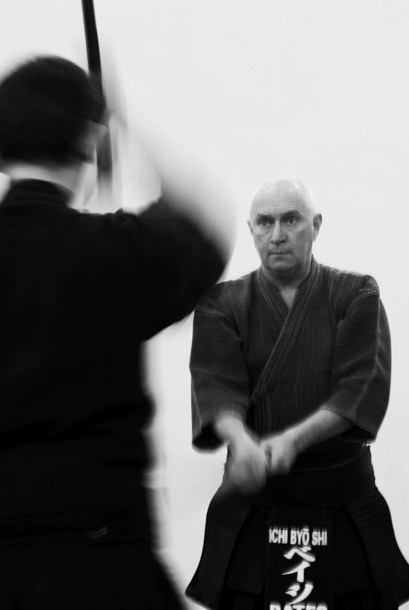

GLOSSARY
Kendo vocabulary
Language matters
Heard a word in class? Search for it below, or jump to a section.

149 terms
General
- kendo剣道
- the way of the sword; training the mind, body, and character through one-on-one striking practice using the shinai while wearing bogu
- kenshi剣士
- kendoist
- dan段
- ranking system for advanced levels (1=lowest, 8=highest); equivalent to black belt in other martial arts
- kyu級
- ranking system for beginning levels (6=lowest, 1=highest); equivalent to a brown belt in other martial arts
- yudansha有段者
- kendoist with a rank of 1st dan (shodan) or higher
- kodansha高段者
- one with a high dan rank, typically 5th dan (godan) or higher
- sensei先生
- instructor, usually with rank 4th dan (yondan) or higher
- shomen正面
- the side of the dojo or hall farthest from the main entrance, the side having the highest place of honor
- seiza正座
- seated attention position
- kiai気合
- a shout or yell to show spirit
- kigurai気位
- confidence, presence, bearing
- kokyu呼吸
- breathing
- shinsa審査
- promotional examination
- counting (1,2,3, ... ,10)一 二 三 四 五 六 七 八 九 十
- ichi, ni, san, shi, go, roku, shichi, hachi, kyu, ju
Commands
- hajime始め
- "Begin!"
- yame止め
- "Stop!"
- ki-o-tsuke気を付け
- "Attention!"
- seiretsu整列
- "make a line"
- chakuza着座
- "sit down (in seiza)"
- kiritsu起立
- "stand up"
- men-tsuke面付け
- "put on the men"
- men-tore面取れ
- "take off the men"
- nuke-to抜け刀
- "draw the sword (shinai)"
- osame-to納め刀
- "return the sword (shinai)"
- haiはい
- "Yes!" Used in place of "okay", or "I understand."
Equipment
Uniform
- hakama袴
- kendo clothing worn on the lower part of the body, a long divided skirt-like trousers
- keiko-gi稽古着
- kendo clothing worn on the upper part of the body, a thick jacket-like shirt
Armour
- bogu防具
- kendo armor consisting of men, kote, do, and tare
- men面
- kendo armor to protect the face, head, and shoulders
- kote小手
- kendo armor used to protect the hand and forearm
- do胴
- kendo armor to protect the trunk and chest
- tare垂
- kendo armor to protect the waist, groin, and upper legs
- tsuki突き
- flap on the men which protects the throat
- tenugui手拭い
- thin cotton towel worn on the head under the men
- nafuda名札
- name tag worn on the center of the tare; also called "zekken"
Swords
- shinai竹刀
- bamboo sword used in kendo
- kensen剣先
- the tip of the shinai
- nakayui中結
- thin strip of leather tied around the shinai about one third down from the tip
- tsuba鍔
- circular guard on the shinai
- tsuka柄
- the handle of the shinai
- tsuka-gashira柄頭
- the very end (bottom) of the tsuka
- tsuru弦
- the string which holds the shinai together
- monouchi物打
- the region of the shinai most effective for striking, located between the tip and the nakayui
- datotsu-bu打突部
- the part of the shinai with which one should strike the opponent. Refers to the jin-bu (side opposite the tsuru) around the region of the mono-uchi.
- bokken木剣
- wooden sword, primarily used for kendo kata
- bokuto木刀
- same as bokken
Etiquette
Opening and closing
- mokuso黙想
- meditation performed in the seiza position
- mokuso-yame黙想止め
- command to stop mokuso
- rei礼
- bow
- shomen-ni-rei正面に礼
- command given to bow to the shomen; done while in seiza
- sensei-ni-rei先生に礼
- command given to bow to the sensei, done while in seiza
- onegai shimasuお願いします
- "I request the favor (of a practice)"; said at the beginning of practice during "sensei-ni-rei"
- arigato gozaimashitaありがとうございました
- "Thank you very much"; said at the end of practice during "sensei-ni-rei"
Always
- rei-gi礼儀
- matters of etiquette
- rei-ho礼法
- doctrines of etiquette
- chaku-so着装
- the manner of wearing keikogi, hakama, and bogu
- ritsu-rei立礼
- standing bow
- sage-to提げ刀
- the posture taken when performing ritsu-rei, with the shinai held in the left hand with the arm hanging naturally at the side. The tsuru faces downward and the hand next to the tsuba.
- sogo-no-rei相互の礼
- ritsu-rei to the opponent. The angle is about 15 degrees, and eye contact is maintained.
Practice
- keiko稽古
- practice, training
- ashi-sabaki足捌き
- footwork
- ato-geiko後稽古
- literally after practice, usually a second practice session for advanced kenshi following a primary practice session which stresses kihon
- datotsu打突
- striking and thrusting. A valid point is referred to as yuko datotsu.
- datotsu-bui打突部位
- the correct striking or thrusting zones of the kendo-gu (protective gear), refers to the men, kote, do, and tsuki areas
- datotsu-no-kikai打突の機会
- chance of strike
- furi-kaburi振りかぶり
- big movement swing of the shinai above one's head
- hasuji刃筋
- cutting path of the sword (angle of cut)
- haya-suburi早素振り
- fast suburi, one count per backward step plus forward strike
- hiraki-ashi開き足
- footwork used when the body is moving diagonally (front foot is same side as forward shoulder)
- issoku-itto-no-maai一足一刀の間合
- distance from which one can strike in one step
- jiyu-keiko自由稽古
- free practice
- kakari-geiko掛かり稽古
- attack practice
- kamae-te構えて
- command to assume kamae
- kihon基本
- basics
- kihon-dosa基本動作
- basic exercises, including uchi-kata and suburi
- kiri-kaeshi切り返し
- basic exercise in which the sides of the men are struck repeatedly, typically in sets of a straight men followed by 4 strikes forward and 5 strikes backward
- ma-ai間合
- distance between opponents
- mawari-geiko回り稽古
- rotation keiko
- men-no-uchi, gokai
- "basic men strike, 5 times"
- men-no-uchi, sankyodo
- "basic men strike, three count movements" (1=raise shinai, 2=strike, moving forward, 3=step back)
- metsuke目付
- use of the eyes to see the opponent, see basic concepts
- motodachi元立ち
- person being struck to provide instruction, for example in uchikomi-geiko, kakari-geiko, or kihon shiai
- okuri-ashi送り足
- the most basic footwork used in kendo, where the feet start and end in the basic kamae position with the right foot in front and the toes of the left foot even with the line of the right heel
- sayu-men左右面
- the right and left striking zones of the men
- seme攻め
- pressure applied to one's opponent
- shiai-geiko試合稽古
- match practice
- shin-kokyu深呼吸
- deep breathing exercise
- shisei姿勢
- posture
- shizentai自然体
- natural standing position
- shomen-uchi正面打ち
- a strike to the center of the men
- suri-ashiすり足
- footwork in which the feet do not lose contact with the floor
- te-no-uchi手の内
- the usage of the hands to tighten/loosen the grip on the shinai or adjusting the balance between the hands when striking or responding
- uchikomi-geiko打ち込み稽古
- practice striking the basic points on the motodachi
- waza技
- technique, see advanced concepts
- zanshin残心
- mental and physical presence of spirit, especially after completing an attack
Positions
- kamae構え
- basic stance; ready position
- chudan-no-kamae中段の構え
- basic kamae, with the kensen pointed at the opponent's throat
- jodan-no-kamae上段の構え
- kamae with the shinai above the head, with the left hand above the forehead about one fist away
- tai-to帯刀
- holding the shinai at the left hip, ready to draw. The tsuka-gashira should be in front of the center of the body.
- sonkyo蹲踞
- the crouching position in which begins and ends each bout
- tsuba-zeriai鍔迫り合い
- the position in which the opponents are close to each other with tsuba or fists together
Types of practice
- suburi素振り
- sword swinging techniques
- jogeburi上下振り
- full sword swing; an exercise used for relaxing and warming up the shoulders and upper back
- suburi素振り
- basic exercise which simulates striking the men repeatedly, performed without an opponent
- suburi-ikkyodo素振り一挙動
- one-count suburi (alternate striking forward and backward on each count)
- suburi-nikyodo素振り二挙動
- two-count suburi (raise the shinai on the odd count; strike on the even count, alternating the going forward and backward and each strike)
Tournaments
- shiai試合
- match
- shiai-jo試合場
- court
- men ari面あり
- "men" (awarding of the men point in a match)
- kote ari小手あり
- "kote" (awarding of the kote point in a match)
- do ari胴あり
- "do" (awarding of the do point in a match)
- tsuki ari突きあり
- "tsuki" (awarding of the tsuki point)
- encho延長
- match overtime period
- fusensho不戦勝
- a match win by default, due to the opponent's absence or forfeit
- gogi合議
- referee's conference during a match, held in the center of the court
- hansoku反則
- match foul, results in one half-point against the offending player
- hansoku ikkai反則一回
- "first hansoku"
- hansoku nikai, ippon ari反則二回 一本あり
- "second hansoku, one point" (awarded to the opponent of the offending player)
- hantei判定
- referees' decision of the winner of a match
- hikiwake引き分け
- match draw
- igi異議
- formal protest in a match, registered by a team manager
- ippon gachi一本勝ち
- a match decided by one point, due to time running out in sanbon-shobu
- ippon shobu一本勝負
- one point match (first person to score wins)
- jogai場外
- stepping out of bounds (this is a hansoku)
- kachinuki勝ち抜き
- a method of conducting matches in which the winner remains and keeps fighting until defeated
- kaishi-sen開始線
- starting line in the court
- kihon-shiai基本試合
- tournament in which kihon is judged. Usually includes rei-ho, kiri-kaeshi, and basic uchikomi
- kumiawase組み合わせ
- tournament match-ups
- mejirushi目印
- red or white tag tied to the crossed do strings on the back, used to distinguish the players in a match
- nihon me二本目
- "Second point" (continues sanbon-shobu after one player has scored the first point of the match)
- sanbon shobu三本勝負
- three point match (first person to score two points wins)
- shiai-jikan試合時間
- match time limit
- shinai-otoshi竹刀落とし
- losing control of the shinai (this is a hansoku)
- shobu勝負
- "Match" (continues sanbon shobu after each player has one point)
- shobu ari勝負あり
- "Match done" (announces the end of the match)
- taikai大会
- tournament
- wakare分かれ
- during shiai: "separate" (timer does not stop)
- yuko datotsu有効打突
- valid point
Personnel
- senpo先鋒
- first player in a team match
- jiho次鋒
- second player in a team match
- chuken中堅
- middle player in a team match
- fukusho副将
- second to last player in a team match
- taisho大将
- last player in a team match (captain)
- kantoku監督
- team manager
- shushin主審
- chief referee (makes the match pronouncements)
- fukushin副審
- sub-referees in a match
- shinpan審判
- judge; referee
- shinpan-cho審判長
- head judge
- shinpan-shunin審判主任
- court judge
No terms match . Try part of the word, or ask at the next session and we’ll add it.